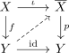

cofibration and weak equivalence as anodyne
1. Proposition
Let  be simplicial sets
be simplicial sets  a cofibration of simplicial sets and weak equivalence between simplicial sets
Then
a cofibration of simplicial sets and weak equivalence between simplicial sets
Then  is an <anodyne>
is an <anodyne>
2. Proof
Consider

using the <actorizatino of anodyne and kan fibration>